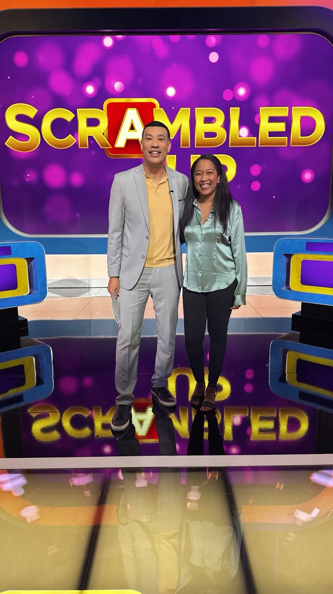
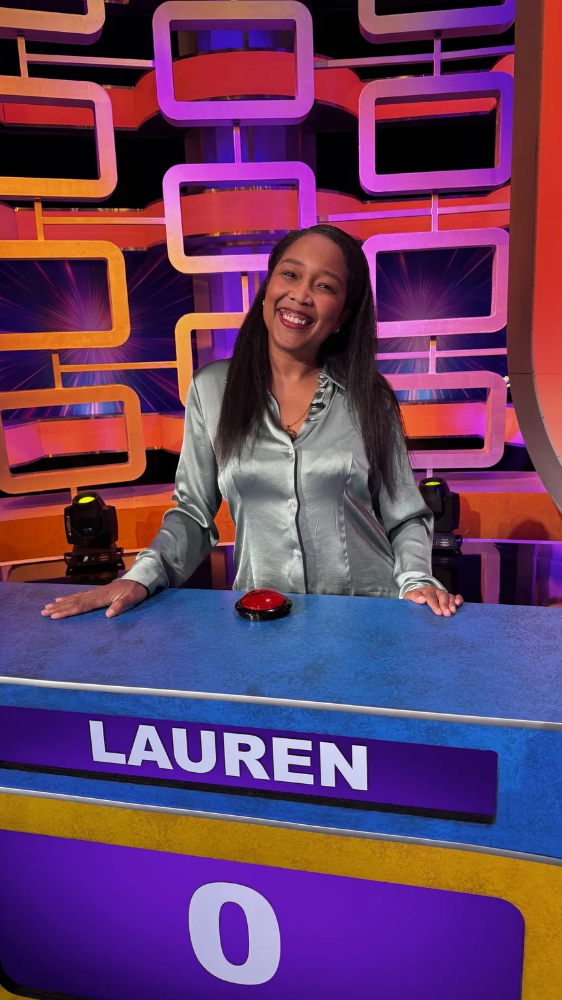

Television / 2026
Scrambled Up
Television Game Show Contestant · 2026
A real television set, an established competition format, and a straightforward credit: Television Game Show Contestant.
← Back to Casting Sheet

What it shows
On somebody else’s set.
This file matters because the production environment is not Lauren-built. The public stills show her working inside a television format with the set, host and competition context visible.
The credit is simple and accurate: Television Game Show Contestant · 2026.
Notes
What it adds.
This adds a third-party television credit alongside Lauren’s creator-led and live-hosting work.
Scrambled Up production stills used on this site and the Casting Sheet.
The site also credits T.I. & Tiny: Friends & Family Hustle as Self / Trap Pilates Participant · Season 2, Episode 7.
Next: Explain
Keep watching.
Move from third-party television into Lauren-led explanation, or go straight to booking.